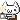
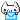

// DATE //
〚TITLE〛
---


 Welcome!
Welcome!
Thank you for logging on! いらっしゃいませ! Enjoy your stay here at 404 Café & Club! Grab a drink, sit back, and relax 
404 Café & Club is a small shop for weary netizens to recharge and relax before wandering further
into the virtual world, or logging back into reality. Many of our guests find comfort and company from
KKCYBER, owner, operator, and webmaster! Spend as much time here as you'd like, or make it a pit stop~!

"No matter where you're from or where you're going, we'll always be connected~! ☆" - ♥ KKCYBER



〚TITLE〛
---
〚GT4 SPEC-II〛
It's been a while since I've sat behind the wheel... I was so nervous I would embarass myself and crash out a ton after being on such an extended break from driving games! It wasn't my intention to be away for so long, but things got so busy and hectic, months passed me by before I knew it! I did my best today, spending sometime driving my beloved Lotus Elise, as well as the Aston Martin DB7 that I worked so hard to acquire last time we played! I still have a lot of room for improvement, but I remembered what made me fall in love with racing games all over again! After attempting and not placing in a Roadster & Spyder only race, we called it a day for solo play and moved to racing some together~! I had a blast racing Ford GTs together especially! What car should we drive next time?
〚ASMR〛
Your ears look a little funny tonight seeder. Don't worry, it's nothing I can't fix! I hope you enjoyed having your ears spoiled with lots of soft triggers and super close whispers. It's a shame there was so much traffic noise, but as someone who has always lived in a city... it's nice in the background sometimes! My stomach made an embarassing amount of noises as well, but I did my best to push through and stunlock you with my super ASMR techniques~! Get some sleep!
〚PUZZLE BOBBLE〛
Think you can beat me, huh? Hope on fightcade, let's go head to head! Today we played a bunch of matches of Azumanga Daioh Puzzle Bobble, an arcade game on the NAOMI system! It's one of my favorite versions of Puzzle Bobble to play since you can attack your opponents with bubbles through a small opening between the fields~ A few seeders bested me, but I won a lot of the matches we played together! At one point, I dragged Shimada into my room to sit at my desk and play against me~! OF COURSE I won VS her, did you think I wouldn't? Either way, did you have fun, even if I was a brat when I won? I sure hope so... because I had a blast!
〚404 CAFÉ〛
Did I keep you waiting too long seeder? Sorry I'm still a bit under the weather, but let's make the most of it! I'm almost through all of the Robusta beans at last, then we can start serving something new when I make coffee! After coffee, I did a bit of drawing and designing. I gave you another evolved form seeder! Did you like it? It's still an early build, so please excuse any problems with the hardware for now! After talking more, I reheated some katsu curry rice for lunch to share, then spent quite a long time going over every single entry I received in the padlet that you organized for me for my anniversary! Thank you so much, it was so thoughtful~! I streamed a lot longer than I expected, but it was nice to catch up finally after feeling sick!
〚4TH ANNIVERSARY〛
HAPPY 4 YEARS OF KKCYBER! Today marks exactly 4 years since my official VTuber debut! Time really flies! It's still a bit of a shock when I look at the last four years retrospectively, especially with regards to how much I've grown! I've grown so much as an artist, performer, singer, gamer, streamer, and especially as your clumsy desktop buddy! Today was made even more special because I was featured on the Front Page of Twitch, the platform I utilize for Live Streaming. On top of that, I worked as hard as I could on some projects to bring an update to the latest build of KKCYBER! I showed off a super cute low-poly 3D model that was created by The Royal Speedwagon! Not only is this model one that I'm able to use as a 3D model for stream... but also to hang out with you on your desktop! Introducing Desktop Denpa, a totally unique virtual assistant lead, developed, and programmed by Skeletom in collaboration with a small team! This program not only features my voice, but also is full of utilities so please check it out! After showing off my projects, I was joined by my friends Mimi, Picky, and Kyun~! We worked on a shared digital canvas together and spent some time chatting and catching up since it has been quite a while since we've had a chance to all spend time together! It felt really nostalic to be able to be in a call all together again! After drawing, I planned to play Puzzle Bobble with Shimada, Koragi, Lily, & Maple... but Fightcade was having conflicts with my computer for some reason! I was able to repair it after stream, but instead I just commentated on some matches between Koragi and Shimada! Once the mess of the Puzzle Bobble section was done, I took a short break for dinner and ate some sushi from my favorite take-out place! Next, we played Jackbox Survery Scramble with Beri, Lily, Maple, Shimada, Koragi, Jets, and Mako! It's not usually my first pick for party games, but with the friends I invited I knew it would be a blast and full of laughs! After catching my breath from laughing so much, we moved to the final segment of the night, VRChat! We started in a world that was created by McDonald's Japan to celebrate their collaboration with Suisei, Ado, and YAOSOBI! I was soon joined by Jets, Clauvio, Nino, Beri, Koragi, Shimada and Clio! We tried playing some Putt Putt golf together, but since it wasn't really working well we moved to a cozy world with fishing to wind down for the night! I'm still so overwhelmed by the support I received from the seeders, my friends, and everyone who stopped by to celebrate the last 4 years I've spent online. I ended up pretty exhausted after an 8 hour stream, so let's chat more about my feelings and reminisce when I'm online next, okay?!
〚ASMR〛
Twas the night before 404 and all through the house, not a seeder was stirring, not even a mouse! Tonight I challenegd myself to something honestly a bit embarassing, so if you missed it well lurk more I guess! I succeeded in my challenge, so I hope you have wonderful sleep as a result! Remember to take it easy~!
〚PRINCE OF 404〛
You look so familiar... have we met somewhere? APRIL FOOLS! Today, seeder met someone mysterious but also quite familiar! They introduced themselves as K-kun, and seemed pretty quiet, shy, and honestly pretty helpless. They attempted to make some coffee for seeder-chan, failed twice, and ended up making Strawberry Ade instead. K-kun is a bit of delinquent though, since they ended up smoking on stream?! Shortly after K-kun said goodbye, I showed up! Or so that's what you claim... huh seeder? You didn't leave any of today's events out when you told me what to put in the analysis did you?
〚404 CAFÉ〛
Café doors open once again! I was away for a few days last week, so I wanted to catch up a bit and share stories about what I was up to while I was gone! In order to get a bit of a break and escape the city a bit, I went to the mountains north of the city of angels! While there, I went hiking for the first time, so I shared the best photo I was able to take while climbing! The clouds were so close, the sky was blue, and the fresh air at higher altitude was so nice. I'm admittedly already trying to plan my next hike! I made some more coffee to share, trying to use up more of the Robusta beans I got from a friend whose family owns their own roastery! I hope you enjoyed using the